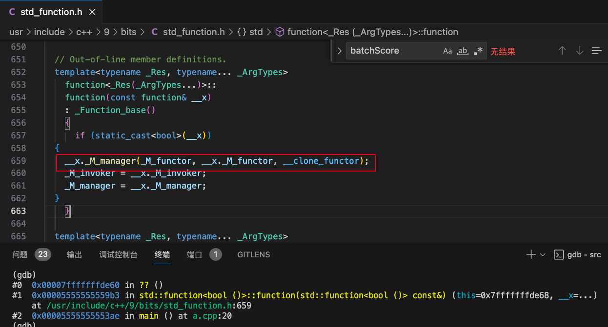

一次CodeReview引发的讨论
起因是这样的，Code Review的时候看到了下面这段Golang的代码：
package main
import "fmt"
func download() error {
fmt.Println("download")
return fmt.Errorf("download error")
}
func main() {
times := 3
var tryDownload func() error
tryDownload = func() error {
if times == 0 {
return fmt.Errorf("exceed max times")
}
err := download()
if err == nil {
return nil
}
times--
return tryDownload()
}
tryDownload()
fmt.Println("last times", times)
}大致意思是尝试下载三次。
由于被Golang的闭包坑过，所以当时给的Code Review的意见是改成for loop的方式，避免闭包捕获可能导致的问题。
当然在Golang中，这段代码是正确的。最终输出结果为：
download
download
download
last times 0可以看出这里的times最终值是0，说明了Golang中的闭包使用的是引用捕获。
进一步思考一下，如果Golang使用的是值捕获，每次
tryDownload中的times都被重置为3，会有问题吗？
总之，写成for loop的方式既简单又直观。
func main() {
times := 3
tryDownload := func(times int) error {
for times > 0 {
err := download()
if err == nil {
return nil
}
times--
}
return fmt.Errorf("exceed max times")
}
tryDownload(times)
fmt.Println("last times", times)
}最终输出为：
download
download
download
last times 3可是偏偏我复现不了
现在回到之前的问题，如果使用值捕获的方式，是否真的会有问题？这里我们用C++重写一下类似的逻辑。这里我尝试在MacOS和Docker中均做了测试，结果一致。
首先先编写相同的引用捕获的情况:
#include <functional>
#include <iostream>
bool download() {
std::cout << "download" << std::endl;
return false;
}
int main() {
int times = 3;
std::function<bool()> tryDownload = [&]() mutable {
if (times == 0) {
return false;
}
if (download()) {
return true;
}
times--;
return tryDownload();
};
tryDownload();
std::cout << "last times " << times << std::endl;
}编译和执行，和Golang完全一致：
g++ a.cpp -std=c++11
./a.out
download
download
download
last times 0之后我们将引用捕获改为值捕获:
```cpp
int main() {
int times = 3;
std::function<bool()> tryDownload = [=]() mutable { // change the `&` to `=`
// ...
};
tryDownload();
std::cout << "last times " << times << std::endl;
}编译和执行：
g++ a.cpp -std=c++11
a.cpp:11:42: warning: variable 'tryDownload' is uninitialized when used within its own initialization [-Wuninitialized]
std::function<bool()> tryDownload = [=]() mutable {
~~~~~~~~~~~ ^
1 warning generated.
./a.out
[1] 38581 segmentation fault ./a.out在编译时，编译器智能的给出了警告，用值捕获的tryDownload对象没有初始化。在运行期果然出现了错误。
但是这个段错误其实并不是由于该对象未初始化导致的，这里我们直接注释掉对tryDownload的调用。
int main() {
int times = 3;
std::function<bool()> tryDownload = [=]() mutable { // change the `&` to `=`
if (times == 0) {
return false;
}
if (download()) {
return true;
}
times--;
return tryDownload();
};
// tryDownload();
std::cout << "last times " << times << std::endl;
}编译和执行，会得到和之前相同的段错误。
有趣的事情发生了。
事情并不简单
要解释这个问题，首先需要理解lambda表达式到底做了什么，以及如何存储捕获的数据的。这里有一个例子，测试环境为gcc (Ubuntu 9.4.0-1ubuntu1~20.04.2) 9.4.0：
#include <iostream>
#pragma pack(1)
int main() {
int p1 = rand();
int p2 = rand();
int64_t q1 = rand();
int64_t q2 = rand();
auto no_cap = []() {
return 0;
};
auto no_cap2 = []() {
int64_t k = rand();
return k;
};
auto v4 = [p1] () {
};
auto v4v8 = [p1, q1] () {
};
auto v4v4v8v8 = [p1, p2, q1, q2] () {
};
auto r4 = [&p1] () {
};
auto r4r8 = [&p1, &q1] () {
};
auto r4r4r8r8 = [&p1, &p2, &q1, &q2] () {
};
auto v4r4 = [p1, &p2] () {
};
auto v8r8 = [q1, &q2] () {
};
auto v4r8 = [p1, &q1] () {
};
auto v8r4 = [q1, &p2] () {
};
std::cout << "sizeof(no_cap) = " << sizeof(no_cap) << std::endl;
std::cout << "sizeof(no_cap2) = " << sizeof(no_cap2) << std::endl;
std::cout << "sizeof(v4) = " << sizeof(v4) << std::endl;
std::cout << "sizeof(v4v8) = " << sizeof(v4v8) << std::endl;
std::cout << "sizeof(v4v4v8v8) = " << sizeof(v4v4v8v8) << std::endl;
std::cout << "sizeof(r4) = " << sizeof(r4) << std::endl;
std::cout << "sizeof(r4r8) = " << sizeof(r4r8) << std::endl;
std::cout << "sizeof(r4r4r8r8) = " << sizeof(r4r4r8r8) << std::endl;
std::cout << "sizeof(v4r4) = " << sizeof(v4r4) << std::endl;
std::cout << "sizeof(v8r8) = " << sizeof(v8r8) << std::endl;
std::cout << "sizeof(v4r8) = " << sizeof(v4r8) << std::endl;
std::cout << "sizeof(v8r4) = " << sizeof(v8r4) << std::endl;
return 0;
}执行的输出为：
sizeof(no_cap) = 1
sizeof(no_cap2) = 1
sizeof(v4) = 4
sizeof(v4v8) = 12
sizeof(v4v4v8v8) = 24
sizeof(r4) = 8
sizeof(r4r8) = 16
sizeof(r4r4r8r8) = 32
sizeof(v4r4) = 12
sizeof(v8r8) = 16
sizeof(v4r8) = 12
sizeof(v8r4) = 16说明一下：
#pragma pack(1): 这句是为了限制编译器做字节对齐的优化，不然不好分析结果。该参数在GCC上会生效，在MacOS Clang中似乎有问题。r4r4v8v8: 其中r4表示用引用(ref)捕获的方式捕获4字节的对象，v8表示用值(value)捕获的方式捕获8字节的对象。no_cap: 大小为1是因为编译器对于占用空间为0的对象，会按照大小为1来处理，比如struct {}类型的对象，其大小也是1。
不难知道，lambda表达式的sizeof其实是值捕获的大小总和加上引用捕获的对象的指针大小总和。本质上，lambda对象其实是一个可调用(callable)的对象。正如下面的两种写法。
int p1;
int64_t q1;
auto v4r8 = [p1, &q1] () {
};
// 等价于
struct lambda_v4r8 {
int p1;
int64_t *q1;
void operator()() {}
};
struct lambda_v4r8 my_v4r8{p1, &q1};所以lambda表达式其实相当于一个语法糖，简化了我们自己的很多工作。编译器需要解析lambda表达式，生成一个可调用的类型，完成赋值。最终我们直接进行调用。
而std::function是另一个有意思的话题。他可以存放各类可调用的对象，包括函数指针，可调用的类，lambda表达式等。但是，他的size是固定的，在我的环境下，它的长度是32字节(不同编译器对其的实现并不相同。这里仅代表GCC)。
这里std::function用了small function optimization的技术，和std::string 一样。如果可调用的对象的大小很小，那么直接将这个对象的内存存到std::function中，如果对象很大，就单独new一份空间，然后copy进去。下面是网上的例子(Link)：
#include <iostream>
#include <functional>
#include <array>
#include <cstdlib> // for malloc() and free()
using namespace std;
// replace operator new and delete to log allocations
void* operator new(std::size_t n) {
cout << "Allocating " << n << " bytes" << endl;
return malloc(n);
}
void operator delete(void* p) throw() {
free(p);
}
int main() {
std::array<char, 16> arr1;
auto lambda1 = [arr1](){};
cout << "Assigning lambda1 of size " << sizeof(lambda1) << endl;
std::function<void()> f1 = lambda1;
std::array<char, 17> arr2;
auto lambda2 = [arr2](){};
cout << "Assigning lambda2 of size " << sizeof(lambda2) << endl;
std::function<void()> f2 = lambda2;
}
// Output:
// Assigning lambda1 of size 16
// Assigning lambda2 of size 17
// Allocating 17 bytes可以看出，如果表达式对象大小在16字节以内(含)，会直接使用自身的内存，如果超过的，会调用new单独分配。
剥离出std::function的源码可以看到。
union _Nocopy_types { // 16 bytes
void* _M_object; // 8 bytes
const void* _M_const_object; // 8 bytes
void (*_M_function_pointer)(); // 8 bytes
void (_Undefined_class::*_M_member_pointer)(); // 16 bytes
};
union _Any_data { // 16 bytes
_Nocopy_types _M_unused; // 16 bytes
char _M_pod_data[sizeof(_Nocopy_types)]; // 16 bytes
};
enum _Manager_operation
{
__get_type_info,
__get_functor_ptr,
__clone_functor,
__destroy_functor
};
class _Function_base { // 32 bytes
typedef bool (*_Manager_type)(_Any_data&, const _Any_data&,
_Manager_operation);
_Any_data _M_functor; // 16 bytes
_Manager_type _M_manager; // 8 bytes
};
class function: private _Function_base { // 32 bytes
using _Invoker_type = _Res (*)(const _Any_data&, _ArgTypes&&...);
_Invoker_type _M_invoker; // 8 bytes
};可以看出一个std::function中有三个部分:
_M_invoker:8 bytes实际调用的函数（指针）_M_functor:16 bytes用来存放函数对象的空间。该空间的读写由_M_manager来控制。_M_manager:8 bytes指向内存管理的工具类的指针，支持4种操作。
最后，我们再回到之前的代码：
int main() {
int times = 3;
std::function<bool()> tryDownload = [=]() mutable { // change the `&` to `=`
if (times == 0) {
return false;
}
if (download()) {
return true;
}
times--;
return tryDownload();
};
// tryDownload();
std::cout << "last times " << times << std::endl;
}这里，其实存在多个对象：
times: 4字节tryDownload: 32字节lambda表达式: 这里值捕获了times和tryDownload（注意，不是捕获了自己，而是外面的std::function），因此是36字节。
实际的执行顺序是:
- 定义了
tryDownload对象，但未初始化。 - 构造lambda表达式对象
- 复制
times - (Crash) 复制
tryDownload
- 复制
- 将lambda对象（36字节）赋值给
tryDownload- 触发动态分配和函数拷贝机制
- 调用
tryDownload

用GDB查看Core的位置，可以发现是在std::function的拷贝构造函数的时候挂掉了。看起来应该是构造lambda表达式的值捕获阶段出现的问题（没有再更深入研究了）。
最后一个问题，为什么引用捕获不会有问题？由于引用捕获实际上只是保存了其指针，因此std::function是否初始化都不影响其地址，也不存在拷贝等问题。
最后简单说两句
工作之后，有意思的事情越来越少了，也没有足够的时间去思考和学习，真是一大憾事。希望看到这篇博客的你，不忘初心，指定你的新年的小目标吧。
这里顺便Cue一下鹏哥，看完之后快留个言说说感想。😁